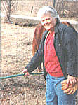
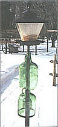
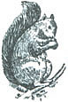

COUNTRY LORE
Peter Godley of Eddington, Maine, sticks it to those warm-weather pests.
Where I frequently have to cross a barbed wire or electric fence, I slit a piece of garden hose and slip it over that part of the wire. It saves my pants and my temper without reducing the effectiveness of the fence.
- Phyllis Hubbard
Corydon, IN
We recently installed a new high-efficiency gas furnace. Besides the obvious savings, we've found another one. In cold weather, such as we've had this winter, when the furnace runs a lot, the condensation created amounts to about four gallons of water a day. Rather than draining it into the cesspool, we started collecting it and using it in the washing machine and steam iron. Water from the dehumidifier, in the summer, can be used the same day. Nice soft water, free of charge!
- Walter Brooks
Bemidji, MN
Regarding John Vivian's article, "Fireproof Your Home" (issue #142), some smoke detectors detect only smoke, others detect only a rapid rise in temperature. It is good to know exactly what yours does. Check it by opening the cover and let smoke from an incense stick drift into the sensing unit. Check for heat sensing by holding an electric hair dryer near the sensor. The alarm should sound if it is heat sensitive and operating properly. Blowing a dryer could cause the unit to function improperly; check the manufacturer's recommended maintenance procedures to ensure you do no damage.
- Fred Wark
Lakeland, MI
About 30 years ago a man wrote to the Bangor Daily News saying, "If everyone did this the state of Maine wouldn't have a black-fly problem." His suggestion was to wear a hard hat smeared with oil.
Unappealing? Absolutely, but it works. And for the past 30 years it has been a blessing to me. It is the only hat that keeps my bald head from sweating. The hats are adjustable to size and do not fall off when bending down. They are cool and comfortable when adjusted. In the fall there is a new hatching of black flies for a few days but because I wear the hat every day there are thousands which won't be breeding next year.
About 15 years ago I drove into Bangor to get something my wife needed at the supermarket and forgot I was wearing my hat with flies. I was stopped several times by shoppers asking, "Are they flies?" "Yes, they are black flies." At that time I was using baby oil but have found that any kind of oil works. I find the best to be chain saw bar oil because it contains a sticky substance that inhibits it from flying off the chain and also protects your shirt from drips on a hot day. Any color hat will do! That's our son Joe in the picture.
-Peter Godley
Eddington, ME
Here are two pictures showing how I have finally baffled the squirrels that were emptying my pole-type feeder. It involves recycling a glass one-gallon wine bottle. Cut the bottom out of the wine bottle. Cut a piece of black plastic pipe about three inches shorter than the feeder mounting pole. Place the plastic pipe over the pole, place the altered wine bottle over the pole and onto the pipe, mount the feeder on the pole.
I had to empty a second wine bottle and alter it. I had one squirrel that was really an athlete. The second bottle stymied him. To mount the second bottle, I cut a piece from the existing plastic pipe the length of the second bottle. I then placed the long piece of plastic pipe over the pole, then the first bottle, then the short piece of plastic pipe, then the second bottle, then the feeder. No squirrel has been able to compromise this arrangement for the last five winters. Their antics are hilarious.
- Fred L. Babbitt
South Windsor, CT
If you get frustrated as I do when trying to cultivate among spreading vines, make a grid! I determined the 12 feet between hills would give me a space to maneuver my Allis Chalmer G tractor and cultivator as I try to till between cukes, pumpkins, and squash. I set metal electric fence rods along one edge of the garden at 12-foot intervals. I did the same along each perpendicular edge.
With the tractor, I drove from each rod on the east side straight across the west, leaving wheel tracks as I went. I did the same from the south to the north. Lo! A grid with each intersection marking the place to plant the seeds.
You can do the same. Figure out the space your cultivator or tiller will need to get between the vines as they spread. Mark the distance along one edge of your garden with flags or posts. Do the same on the perpendicular edge and then make tracks in two directions with your tiller. Plant at the intersections of your tracks, and you too, will enjoy tilling among the vines.
- Bonnie Gelle
Grand Rapids, MN
To construct a number of small brushes, go to a thrift market or yard sale and purchase an old car or windshield brush. Take it home and saw it into small brushes. You can shape the bristles with scissors. Now tell me, what can you buy for a nickel nowadays that gives you such value?
- Russell L. Skinner
Central Point, OR
After reading ("Walnut Tips" #143) in Country Lore, I realized that what I have been doing for years is not common knowledge. Why go through the trouble of getting rid of the stain when you can do without it.
After you enjoy collecting the walnuts, just drop them on a hard surface, one that you don't care about staining. I use a three foot section of a 4" x 4" as my crusher. Lift it about a foot or so and let it fall on a walnut. The weight is enough to crack the hull but not enough to crack the shell. Usually the hull splits right off. For those ornery ones that don't, wear a pair of rubber gloves and hull the rest of the way. You can hull a bushel or so in about an hour. It's cleaner and it gives you a little aerobic weight lifting.
After the nuts are hulled, with gloves still on, put them in a bread rack in a single layer to dry for a couple of days in the sun. Be sure to put them up and out of reach of squirrels. I learned the hard way the first year. I lost half of my nuts and now have enough walnut trees growing on my property to start my own lumber mill in 50 years.
After they have dried, put them in mesh potato bags and hang them in the garage to further dry and cure. Next year you can crack them and use them. If you crack them the same year, the meat is usually still moist and will mildew. After cracking the nuts ( I usually pick them while I'm watching TV), I save the big pieces for cookies and brownies, the smaller pieces for cakes and bread, and the fine stuff for the birds' and squirrels' winter treat.
- Jim Polk
Jamestown, OH
Editor's Note: Next issue "Country Lore" will be bigger still. But we'll need more of your practical, down-home suggestions and solutions to make it work. Please, share the wisdom and send your Country Lore contributions (along with a photo, if you want to be famous) to "Lore," MOTHER EARTH NEWS, PO. Box 129, Arden, NC 28704.
|
 |
|
 |
|
 |
|
|